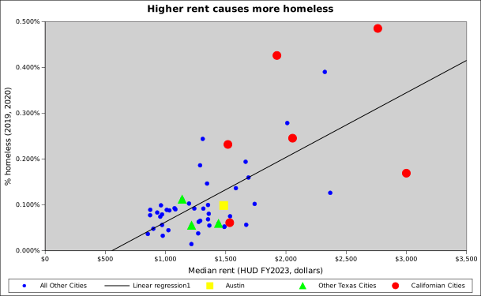
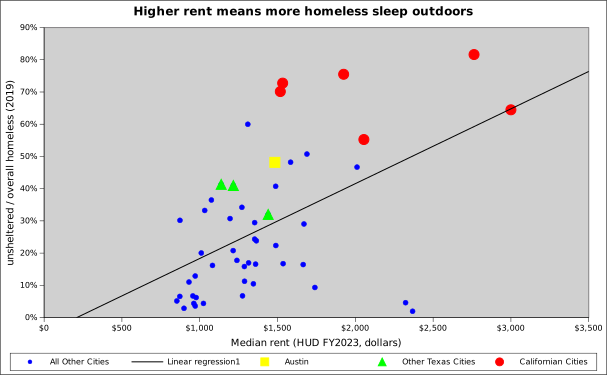
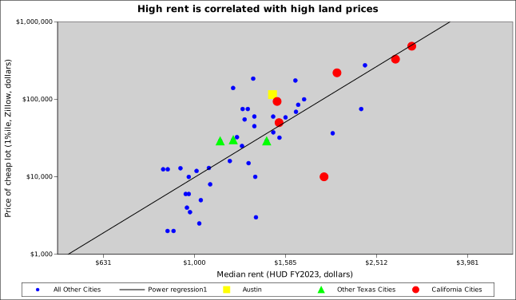

I am an economist studying the housing crisis in Austin, Texas. Part of my process is comparing Austin to other cities. I collected data from the 50 largest cities in America (by metro population) and compared them. Austin is in the middle of the pack — it is the 28th largest.
The data can be downloaded as a big spreadsheet.
It is pretty easy to see that high rent causes more of the population to be homeless.
It is also easy to see that high rent causes more homeless to go unsheltered
Economists have traced the high cost of housing to cities' zoning laws. This is visible in the data as a high land price is correlated with high rent.
In the above graph, the "logarithm" function has been applied to the rents and land prices. It makes the cheaper priced lots visible along side the expensive ones. This is common practice in economics.
The big spreadsheet includes:
Warning: Be aware that the data comes from regions with different boundaries. HUD's rents and homeless numbers are not consistently aligned with metro areas nor cities. The data has little correlation with the cities' areas, but ratios may matter.
{kind=link}
{kind=link}